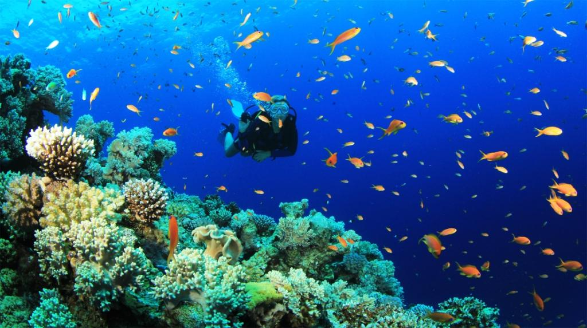

Scuba Diving operators generally have small boats (for about 6 divers) and larger boats for about 15 divers. You can reach these Scuba Diving Sites within 10 to 45 minutes depending upon the distance to the location from the shore.
Shore dives are a rarity. Operators generally have small boats (for about 6 divers). Some do have larger boats for about 15 divers. Most dives are before noon and, depending on the operator, could mean a two tank dive or a trip back to the shore to reload for the second dive. The boat trips are pretty quick ranging from 10 minutes to 45 minutes depending on the location. All most all major dive operators have an on board supply of pure Oxygen in the unlikely event of a Decompression Illness emergency. The boats are also equipped with radio and cell phones to activate Emergency Medical Services if required. The dive objective could change depending on what you encounter on the way! Sometimes the visibility is so good that you would see interesting rock formations on the way and wish to dive then and there, or the boat could bump into a Whale Shark or Manta Ray and everyone will forget all about diving and snorkel with the beast for the rest of the morning!